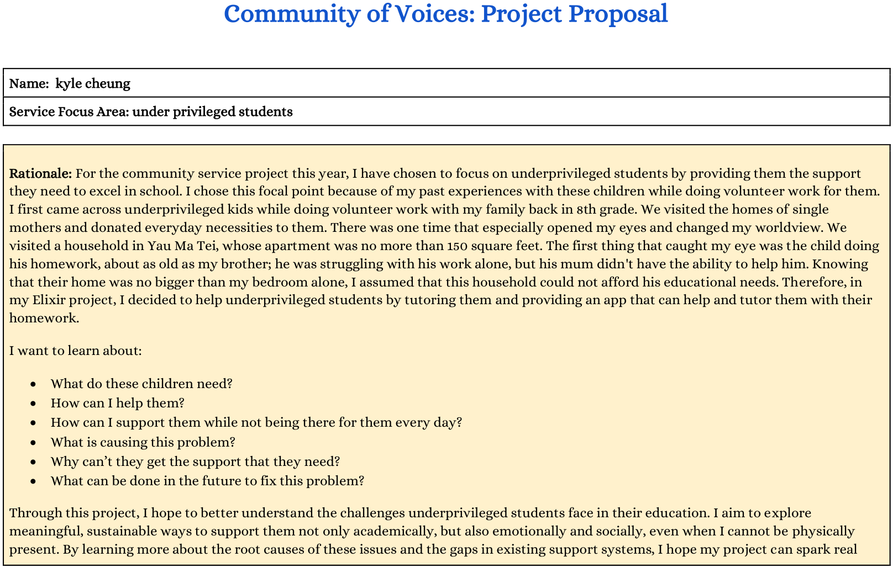
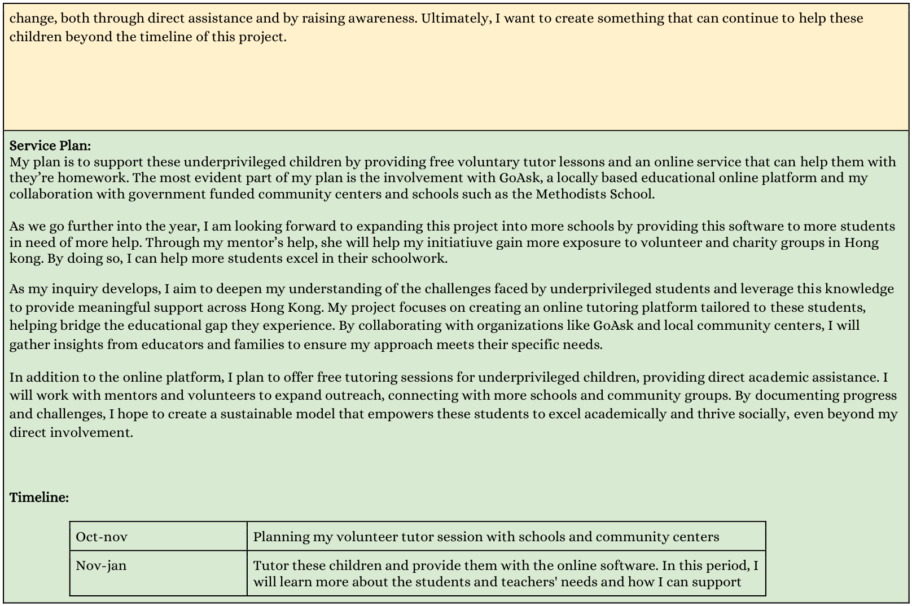
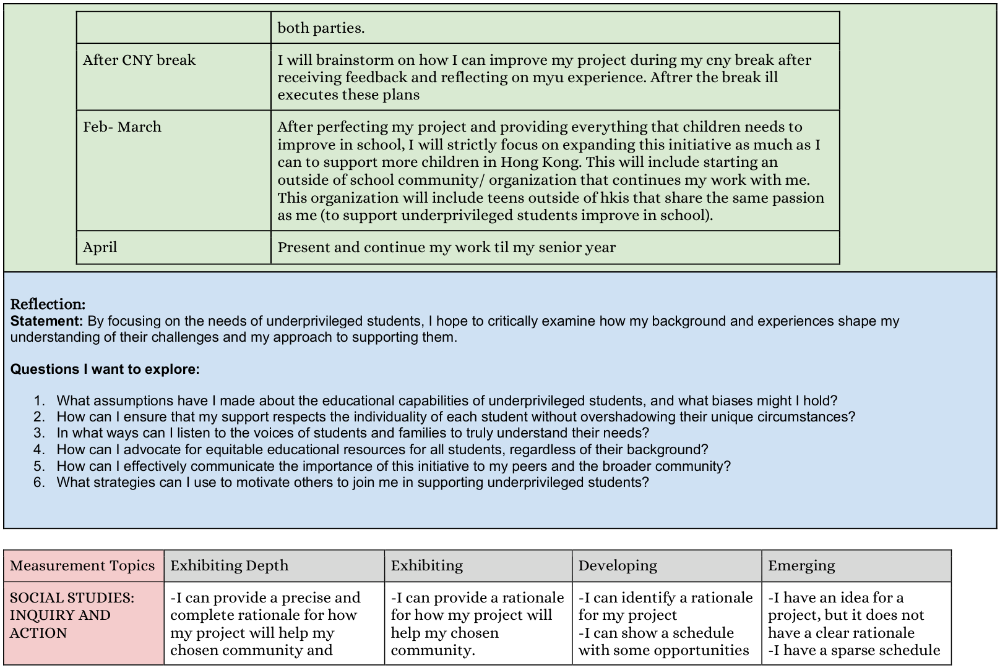
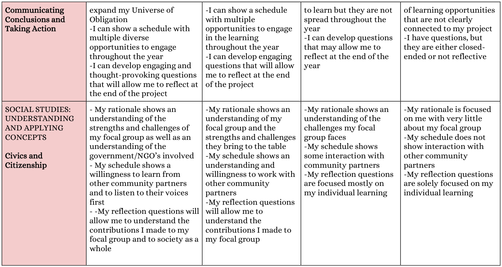

We bridge the critical English learning gap for underprivileged children of single mothers in Hong Kong. By pairing high-fidelity bilingual peer-tutoring with our localized GoAsk AI platform, we provide 24/7 structural support that transforms potential into success.
Student Question:
Explain: "He would have completed the assignment if he had more time."
GoAsk AI Explanation:
呢句係「第三類條件句」(Third Conditional)，用嚟表達同過去事實相反嘅假設。
• He would have completed (佢本來可以完成) —— 過去應該會發生嘅結果。
• if he had had more time (如果佢當時有更多時間) —— 過去並未發生嘅條件。
Simulate Homework Concept:
The Educational Divide in Hong Kong
Hong Kong’s education system assumes equal home baselines. For underprivileged children of single mothers, this assumption represents an insurmountable wall.
Single mothers routinely work 12-hour shifts to sustain their families. They are physically absent during the critical after-school hours, leaving children entirely unguided through homework.
Even when home, these mothers often lack the English proficiency required to assist with standard local curricula, leaving bright children locked behind language barriers with zero academic scaffolding.
Traditional volunteer groups collapse during holiday breaks or exam seasons. Without structural consistency and technical safety nets, underprivileged students face erratic learning trajectories.
English-only immersion fails underprivileged students because they lose the logical bridge. Cantonese-only translation fails because they do not practice English outputs.
Our model enforces Bilingual Scaffolding: complex grammar concepts are taught and contextualized in fluent Cantonese, then immediately converted into English production.
Bilingual tutors navigate and bridge both languages flawlessly.
Deploying standard, English-only speaking volunteers. Without Cantonese comprehension, the student experiences high friction, confusion, and psychological disengagement.
Recruiting bilingual international school students who explain advanced English structures in mother-tongue Cantonese, transforming barriers into a structural launchpad.
Individual volunteer sign-ups fail during exam seasons or holidays, abandoning students for weeks.
When physical tutors rotate off, students maintain 24/7 access to our specialized GoAsk AI portal for immediate bilingual homework support.
Project Proposal & Research Papers
Our operational methodology is built on academic literature and strategic blueprints. Explore our original, verified initial project proposals and the 10-page annotated bibliography detailing the structural pedagogy of our focal group.

Scope of the bilingual scaffolding approach and focal constraints.

Operational phases and strategic milestones mapping across school terms.

Design framework for Cantonese explanations and English homework output.

GoAsk AI platform licensing integration and partnership expansion plans.
Swipe/Scroll horizontally to view the full 10-page annotated literature review:
The GoAsk AI Platform
Through strategic licensing partnerships, we deploy customized, Cantonese-scaffolded AI educational interfaces to ensure learning never stops.
Custom prompt formats force the model to translate English worksheets, explain concepts in natural, conversational Cantonese, and return clear syntactic breakdowns.
Eliminates time poverty. Students can submit questions at 11:00 PM while their mothers are finishing shifts, receiving immediate, verified instruction.
Partnership programs grant free, fully monitored GoAsk student licenses to community center cohorts, allowing progress-tracking by certified educational guides.
Tutor leads inspect dashboard usage patterns, identifying persistent syntax difficulties and adapting physical bilingual tutoring curriculums to match.
Our Cross-School Coalition
Community of Voices unites student advocates and institutions across Hong Kong to deliver reliable, structured educational equity.
We operate in strategic licensing partnership with a CUHK-affiliated educational enterprise, securing deep discounts and grants to distribute hundreds of GoAsk AI platform keys to underprivileged communities.
Request Strategic Partnership
Are you a school coordinator, community center representative, or technology ally? Complete this secure form to join our structural alliance, coordinate tutor deployments, or request free GoAsk student licenses.
Your strategic partnership request has been securely logged and indexed into the Community of Voices (CoV) database. Our administrative leads will review the operational bounds and reach out within 48 business hours.